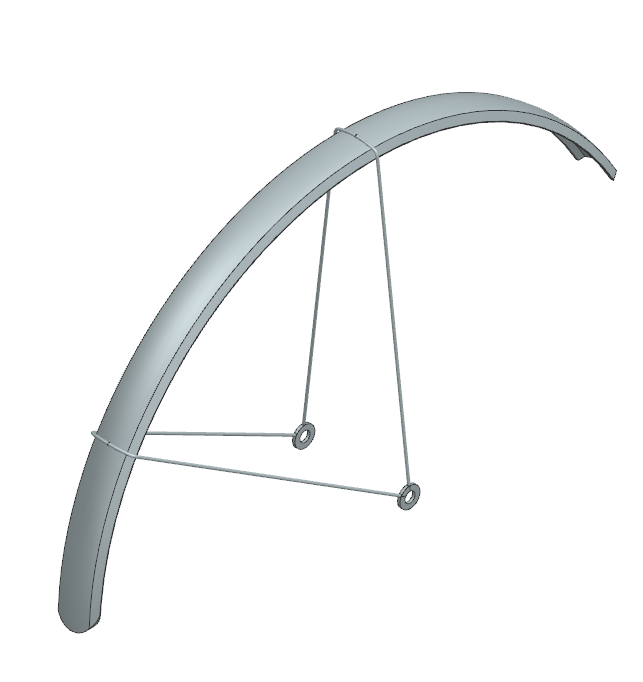

CAD Portfolio
Quick Links:
College
My CAD work in college has been limited to coursework.
Siemens NX
Through an engineering design course I was introduced to Siemens NX. The final project for this class had students work in teams to design a bicycle:

My contributions to the bicycle included:
1. The frame.

2. The tire and wheel.


3. The fender.

4. The water bottle holder.

High School
My highschool CAD experience started with an introductory engineering course, and continued to develop in my county-wide F.I.R.S.T. Robotics Competition (FRC) team.
SolidWorks
I learned the fundamentals of CAD work in SolidWorks. Here are some example parts:
1. Pressure plate

2. Rack

AutoCAD
I applied my SolidWorks experience to AutoCAD.
1. Cone

2. Goose neck

3. Sheet Metal

Fusion 360
Over covid lockdown I worked on some personal projects. I did not have access to many softwares and turned to Fusion 360 for its ease of access.
One of those was the design of a toy Biplane for my younger brother that would incorporate a motorized propellor.
1. Biplane head & tail


3. Bottom wings & top wings


5. Propellor

6. Piece to hold in the battery and motor

Onshape
While under covid lockdown restrictions I also joined the FRC team.
We fully designed our robot in CAD before building:

I was assigned the shooter mechanism:


The main components for this included:
1. The side panels

2. The adjustable hood


3. The I.R. camera mount